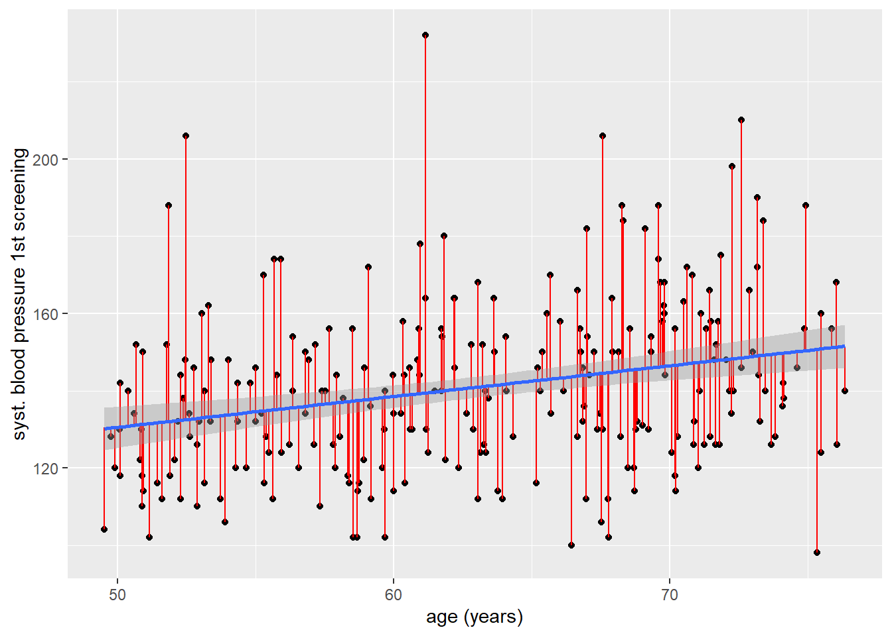

library(tidyverse)
library(haven)
library(broom)
hoorn <- read_sav("data/Hoorn.sav") |>
mutate(across(where(is.labelled), as_factor))3 Lineaire regressieanalyse
4 Lineaire Regressieanalyse
4.1 Introductie
In deze video gaan we kijken hoe we lineaire regressieanalyse uit kunnen voeren in R. Lineaire regressie is een flexibele analysetechniek waarmee we verbanden tussen een kwanitatieve (continue) uitkomstvariabele en één of meerdere determinanten van ieder meetniveau (dichotoom, categoriaal en continue) kunnen schatten. Voor het uitvoeren van lineaire regressie hebben we geen aanvullende packages nodig aangezien de belangrijkste functie lm() onderdeel uit maakt van de stats package die standaard in base R is ingebouwd en ook autmatisch wordt ingeladen. We laden zoals gebruikelijk nog wel haven en tidyverse in, en ook een nieuwe package: broom. Ook maken we weer gebruik van de Hoorn dataset
Wat in deze video wordt besproken:
Lineaire regressie met een continue determinant
Lineaire regressie met een dichotome determinant
Lineaire dummy-regressie met een categoriale determinant
Beoordelen van assumpties van lineaire regressieanalyse
4.2 Assumpties van lineaire regressieanalyse
Buiten de altijd geldende assumptie van onafhankelijkheid van de observaties (die we vanuit enkel de data niet kunnen beoordelen), gelden er voor lineaire regressie drie assumpties:
Er moet sprake zijn van een lineair verband tussen uitkomst en determinant
Het residu van de analyse moet bij benadering normaal verdeeld zijn
Homogeniteit van de variantie van het residu (homoscedasticiteit)
Indien er meer dan één determinant in het model wordt opgenomen geldt ook:
- Weinig tot geen multicollineairiteit tussen de determinanten
4.2.1 Lineaire regressie met een continue determinant
Om een lineaire regressie te schatten maken we gebruik van de lm() functie, wat staat voor linear model. De lm() functie heeft minimaal twee argumenten nodig; een formule, en de data die we willen gebruiken. Wij gaan de relatie tussen systolische bloeddruk (sbp1s) en leeftijd (age) bekijken, waardoor onze formule dus sbp1 ~ age is. We slaan de resultaten op in het object fit.
fit <- lm(sbp1s ~ age, data = hoorn)
fit
Call:
lm(formula = sbp1s ~ age, data = hoorn)
Coefficients:
(Intercept) age
90.6836 0.7974 Als we het fit object bekijken, krijgen we het lineaire model te zien. In ons geval is deze:
\[ \hat{Y}_{bloeddruk}=90.68+0.80\times leeftijd \]
Het intercept (\(b_0\)) laat zien dat de geschatte bloeddruk voor iemand met een leeftijd van 0 gelijk is aan 90.68. De regressiecoëfficiënt (\(b_1\)) laat zien dat voor ieder jaar, de geschatte bloeddruk met 0.8 mmHg stijgt. Er is dus een positief verband tussen bloeddruk en leeftijd.
Als we wat meer informatie willen uit het fit object, kunnen we deze in de summary() functie zetten:
summary(fit)
Call:
lm(formula = sbp1s ~ age, data = hoorn)
Residuals:
Min 1Q Median 3Q Max
-52.488 -15.704 -1.351 12.283 92.676
Coefficients:
Estimate Std. Error t value Pr(>|t|)
(Intercept) 90.6836 11.6124 7.809 1.64e-13 ***
age 0.7974 0.1836 4.344 2.04e-05 ***
---
Signif. codes: 0 '***' 0.001 '**' 0.01 '*' 0.05 '.' 0.1 ' ' 1
Residual standard error: 21.68 on 247 degrees of freedom
(1 observation deleted due to missingness)
Multiple R-squared: 0.07098, Adjusted R-squared: 0.06722
F-statistic: 18.87 on 1 and 247 DF, p-value: 2.043e-05We zien in de summary o.a. wat informatie over de residuen (komen we later op terug), de precisie van de schattingen (standard errors), test-statistics, p-waarden, de F-toets en de R-square. A.d.h.v. de toetsing kunnen we zien dat het verband tussen leeftijd en bloeddruk statistisch significant is, want de p-waarde is lager dan de gangbare \(\alpha =0.05\). Verder zien we aan de R-square dat ongeveer 7% van de variatie in systolische bloeddruk in deze steekproef verklaard wordt door leeftijd. Als we ook nog de betrouwbaarheidsintervallen rondom de coëfficiënten willen krijgen, dan kunnen we de confint() functie gebruiken, óf de tidy() functie uit de broom package:
confint(fit) 2.5 % 97.5 %
(Intercept) 67.8115789 113.555672
age 0.4358552 1.158925tidy(fit, conf.int = T)# A tibble: 2 × 7
term estimate std.error statistic p.value conf.low conf.high
<chr> <dbl> <dbl> <dbl> <dbl> <dbl> <dbl>
1 (Intercept) 90.7 11.6 7.81 1.64e-13 67.8 114.
2 age 0.797 0.184 4.34 2.04e- 5 0.436 1.16Mijn voorkeur gaat persoonlijk uit naar tidy(conf.int = TRUE) omdat de betrouwbaarheidsintervallen dan netjes in de output bij de coëfficienten verschijnen en de tabel er meteen netter uit ziet. A.d.h.v. de betrouwbaarheidsinterval kunnen we ook zien dat de relatie statistisch significant is, omdat de 0 buiten het interval ligt.
4.2.2 Lineaire regressie met een dichotome determinant
We kunnen lineaire regressie ook toepassen als de determinant dichotoom is. We gaan de relatie tussen geslacht (gender) en systolische bloeddruk (sbp1s) bekijken. We slaan het model op in het object fit2.
fit2 <- lm(sbp1s ~ gender, data = hoorn)
fit2 |> tidy(conf.int = TRUE)# A tibble: 2 × 7
term estimate std.error statistic p.value conf.low conf.high
<chr> <dbl> <dbl> <dbl> <dbl> <dbl> <dbl>
1 (Intercept) 138. 2.02 68.6 8.03e-163 134. 142.
2 gendervrouw 4.87 2.83 1.72 8.68e- 2 -0.709 10.5We krijgen het volgende geschatte model:
\[ \hat{Y}_{bloeddruk}=138.31+4.87\times vrouw \]
Aangezien gender in onze dataset een factor variabele is, wordt de naam van de waarde waarvoor het regressiecoëfficiënt berekend wordt weergegeven. In dit geval is dat voor vrouwen. Dat betekend dus dat voor een man, de geschatte bloeddruk gelijk is aan 138.31 mmHg, en dat voor vrouwen de bloeddruk gemiddeld 4.87 mmHg hoger is t.o.v. mannen. De geschatte bloeddruk voor vrouwen is op basis van dit model dus 138.31 + 4.87 = 143.18.
Het zou zomaar kunnen zijn dat we de referentiegroep (in dit geval mannen) willen omdraaien. Nu kiest lm() autmatisch de ‘laagste’ waarde voor de referentiecategorie, in dit geval wordt dat op alfabetische volgorde gedaan (de m van man komt eerder voor dan de v van vrouw). We kunnen dat eenvoudig omdraaien met de factor() functie, en de het levels argument, het level wat je als eerst benoemd in factor(), zal automatisch als ‘laagste’ categorie worden gebruikt.
hoorn$gender <- factor(hoorn$gender, levels = c("vrouw", "man"))
fit2_1 <- lm(sbp1s ~ gender, data = hoorn)
fit2_1 |> tidy(conf.int = T)# A tibble: 2 × 7
term estimate std.error statistic p.value conf.low conf.high
<chr> <dbl> <dbl> <dbl> <dbl> <dbl> <dbl>
1 (Intercept) 143. 1.99 71.9 1.37e-167 139. 147.
2 genderman -4.87 2.83 -1.72 8.68e- 2 -10.5 0.7094.2.3 Lineaire regressie met een categoriale variabele
In principe werkt lineaire regressie met een categoriale variabele (met > 2 categorieën) min of meer hetzelfde als met een dichotome determinant. Voor het aantal categorieën - 1 worden er automatisch dummy variabelen gemaakt en per dummy variabele wordt een regressiecoëfficiënt geschat. Ook hier geldt dat als de variabele een factor() is, de laagste categorie standaard als referentie wordt genomen (alfabetisch, of numeriek, afhankelijk van de levels), en dat we deze handmatig in kunnen stellen door de factor levels aan te passen naar een andere volgorde. Laten we eens naar huwelijksstaat (mar_st) kijken:
4.2.4 Lineair verband
Het spreek voor zich dat als we een lineair model willen gebruiken om een verband te schatten tussen variabelen, dat ook goed past. Immers: als een verband kwadratisch blijk te zijn, dan is een linear model geen geschikte methode. Er zijn meerdere manieren om een idee te krijgen of er sprake is van een lineair verband. De meest eenvoudige in het geval van een kwantitatieve uitkomst: een scatterplot! Laten we eens kijken naar de relatie tussen leeftijd (age) en systolische bloeddruk (sbp1s).
ggplot(hoorn,
aes(x = age, y = sbp1s)) +
geom_point()Warning: Removed 1 row containing missing values or values outside the scale range
(`geom_point()`).
De manier waarop je naar dit plaatje kunt kijken: zie je buiten een rechtlijnig verband een andersoortig verband wat redelijkerwijs bij de data zou passen? In dit geval zie ik geen duidelijke andersoortige patronen die beter passen dan een rechte lijn: een rechtlijnig model zal mogelijk goed passen.
Oefening: Met welke twee geoms zou je de ggplot() uit kunnen breiden om iets beter te kunnen bepalen of een rechtlijnig verband goed past? Tip: denk aan de video over visualisatie.
4.2.5 Normaliteit van het residu
Het residu is de onverklaarde variantie in de uitkomstvariabele die overblijft na dat je de lineaire regressie hebt uitgevoerd. Deze assumptie kunnen we dus pas controleren als we de analyse uitgevoerd hebben, wat soms een beetje gek aan kan voelen. We kunnen de residuen laten berekenen met behulp de resid() functie. Wat we daarvoor nodig hebben is een ‘gefit’ model
`geom_smooth()` using formula = 'y ~ x'Warning: Removed 1 row containing non-finite outside the scale range
(`stat_smooth()`).Warning: Removed 1 row containing missing values or values outside the scale range
(`geom_point()`).Warning: Removed 1 row containing missing values or values outside the scale range
(`geom_segment()`).